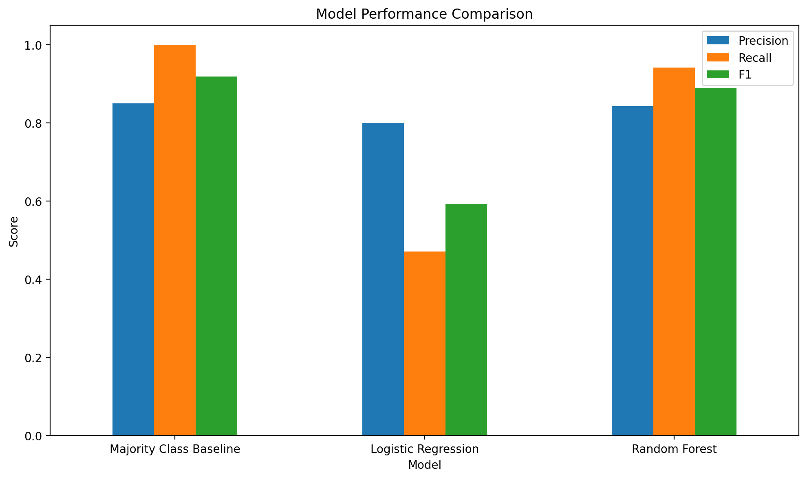
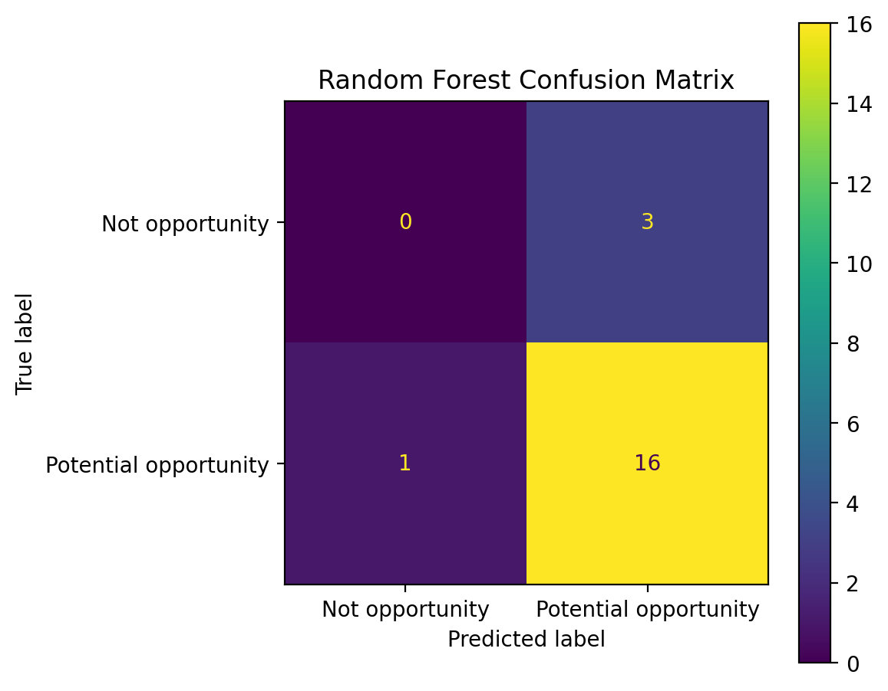
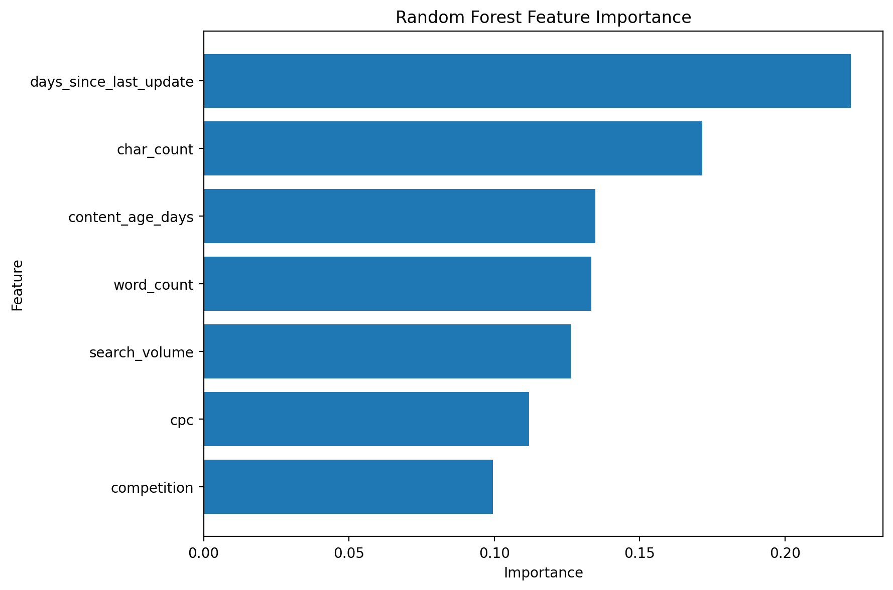
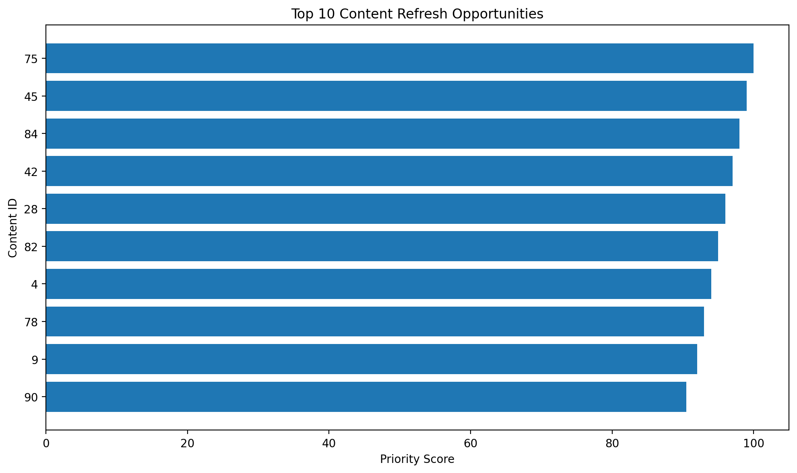
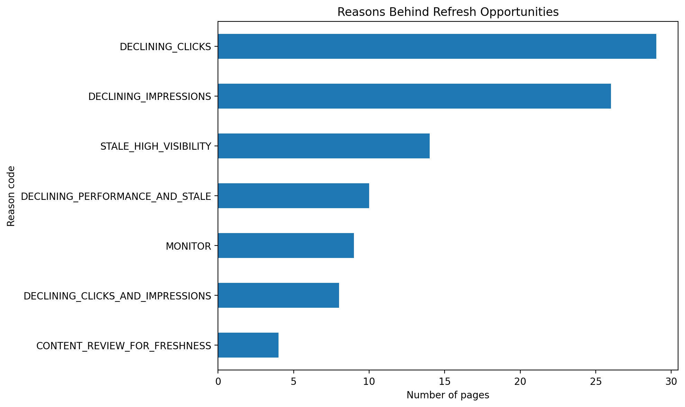

Abstract
This project asks whether observable search-performance and content-freshness signals can be used to prioritize pages for potential content review. Using 100 anonymized content records from the FlyRank ML Internship dataset, a rule-based opportunity label was constructed and compared with Logistic Regression and Random Forest models. The Random Forest achieved an F1-score of 0.889 and recall of 0.941 on a 20-page held-out sample, identifying 16 of 17 potential-opportunity pages. However, it also classified all three non-opportunity pages as opportunities and produced a ROC-AUC of 0.353, limiting confidence in its probability ranking. The resulting system is therefore best interpreted as a high-recall screening and decision-support workflow rather than evidence that refreshing a page will cause improved search performance.
1. Introduction / Problem Statement
Content teams may have many pages that could potentially benefit from review, but reviewing every page with equal priority is inefficient.
The decision supported by this project is:
The goal is not to predict Google's ranking algorithm or guarantee that a refresh will improve performance. Instead, the project creates a repeatable scoring workflow that identifies pages showing observable signals associated with potential review opportunities.
2. Data
The analysis uses the FlyRank ML Internship dataset warehouse release containing anonymized content-level search and content-health measurements.
Dataset size
The working dataset contains 100 rows and 16 columns.
Key variables
- Search volume
- Competition
- CPC
- Word count
- Character count
- Content age
- Days since last update
- Previous 30-day impressions, clicks and sessions
- Last 30-day impressions, clicks and sessions
- Trend direction
- Trend percentage
Data quality
All required columns were present and no missing values were found in the analyzed dataset.
Public-safe exclusions
The analysis does not expose client names, domains, private search queries, credentials, or raw private exports. The output is restricted to anonymized content identifiers and aggregate model results.
3. Methodology
Opportunity label
A decision-support opportunity label was constructed from observable content-performance and freshness conditions. Of the 100 analyzed pages, 87 were labeled as potential opportunities and 13 were not.
Features
The modeling workflow uses available content and search-demand characteristics while avoiding direct use of variables that define the opportunity label, reducing the risk of target leakage.
Models
- Majority-class baseline — simple reference point.
- Logistic Regression — interpretable classification benchmark.
- Random Forest — nonlinear ensemble model used for the primary scoring experiment.
Validation design
The models were evaluated using the same held-out 20% test set. The test set contained 20 pages: 3 labeled as not opportunities and 17 labeled as potential opportunities.
Leakage checks
Training and validation data were separated before model fitting and preprocessing. Label-defining information was excluded from the primary model features so that the model was not simply given the answer it was expected to predict.
4. Results
The models were evaluated on the same held-out test set.
| Model | Accuracy | Precision | Recall | F1 | ROC-AUC |
|---|---|---|---|---|---|
| Logistic Regression | 0.450 | 0.800 | 0.471 | 0.593 | 0.373 |
| Random Forest | 0.800 | 0.842 | 0.941 | 0.889 | 0.353 |

Confusion matrix
The Random Forest correctly identified 16 of 17 potential opportunities. However, all 3 pages labeled as not opportunities were classified as opportunities.

5. Model Signals
The Random Forest feature importance results indicate which variables contributed most to its decisions in this experiment.

The highest model importance was assigned to days_since_last_update, followed by character count, content age, word count, search volume, CPC, and competition.
These are model associations, not causal effects. In particular, the feature importance result does not establish that updating a page will cause search performance to improve.
6. Limitations & Honest Framing
Small sample
Only 100 pages were available, with 20 pages in the held-out test set. This makes individual evaluation metrics sensitive to the particular split.
Constructed label
The opportunity label represents a decision-support rule based on observable signals. It is not an observed outcome demonstrating that a refresh would improve performance.
Class imbalance
87 of 100 pages were labeled as potential opportunities. Accuracy therefore does not tell the complete story.
Validation limitations
The available aggregate windows do not provide a clean future outcome following an actual content refresh. The experiment therefore does not establish true future forecasting performance.
No causal claim
The analysis does not establish that content age, freshness, content length, search demand, or any other feature causes search-performance changes.
7. Ranked Recommendations
The scoring workflow converts model outputs and observable signals into a ranked content-review queue.

Action playbook
Reason codes

Reason codes make each recommendation interpretable by explaining the primary observable signal behind its ranking.
8. Reproducibility
The complete analysis was developed in Google Colab and saved as a reproducible notebook.
- Notebook: work/notebooks/capstone.ipynb
- Repository: GitHub repository
- Charts are stored under: docs/assets/
The workflow includes data validation, label construction, feature engineering, model training, validation, feature analysis, scoring, reason-code generation, and ranked recommendations.
9. Conclusion
This capstone demonstrates a complete content-review prioritization workflow using machine learning and anonymized search-performance signals.
The Random Forest produced strong recall and F1 on the small held-out sample, making it potentially useful as a first-pass screening tool. However, the weak ROC-AUC and false-positive behavior show why the output should not be treated as a production-ready predictor.
The practical value of the workflow is therefore its ability to create a transparent, ranked review queue that helps content teams decide where human investigation may be most useful.